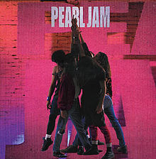

Mijn muziek
Favoriet nummer
Playlist
Queens of the Stone Age - Domesticated Animals
DJ Shadow feat Run the Jewels - Nobody Speak
Focus - Hocus Pocus
Anderson Paak - Come Down
Albums
And So I Watch You From Afar - And So I Watch You From Afar
Wiki
Set Guitars to Kill
06:11
A Little Bit of Solidarity goes a Long Way
03:25
Clench Fists, Grit Teeth...Go!
06:19
I Capture Castles
07:17
Start a Band
04:53
Tip of the Hat, Punch in The Face
04:21
If It Ain't Broke...Break It
06:21
These Riots Are Just the Beginning
06:21
Don't Waste Time Doing Things You Hate
07:31
The Voiceless
06:27
Eat the City, Eat It Whole
07:45
And So I Watch You From Afar - And So I Watch You From Afar
Wiki
Set Guitars to Kill
06:11
Second Hand News
02:56
Dream
4:14
Never Going Back Again
02:14
Don't Stop
03:13
go Your Own Way
3:38
Songbird
3:20
The Chain
04:30
You Make Loving Fun
03:31
I Don't Want to Know
03:15
Oh Daddy
03:56
Gold Dust Woman
04:56
Pearl Jam - Ten

Festivals
Pukkelpop
Rock Werchter
Tomorrowland
Graspop
Dour
Pukkelpop
terug naar boven
Rock Werchter
terug naar boven
Tomorrowland
terug naar boven
Graspop
terug naar boven
Dour
terug naar boven